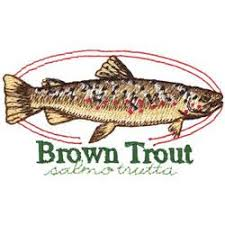

Get this image on: AnnTheGran.com
Fly fishing is a sport that is fun for all people including all ages.
The reasons why people should fly fish is because you can really get outdors
and haveing the fun of the challenge as fish wreasl with your line and
list to a sporting event like foot ball or a calm nature documentation.
Fly fishing is often described as more of a "meditative dance" or a "strategic puzzle"
than a simple hobby. In 2026, many anglers are drawn to it as an intentional way to unplug
from digital distractions and reconnect with the natural world. there was a famous
quote and it read, “I fish not because I wish to kill, but because fishing helps me to live.
I fish to learn the habits of trout, to cast flies with precision, and occasionally to contend with a worthy adversary.”
By- Theodore Gordon.